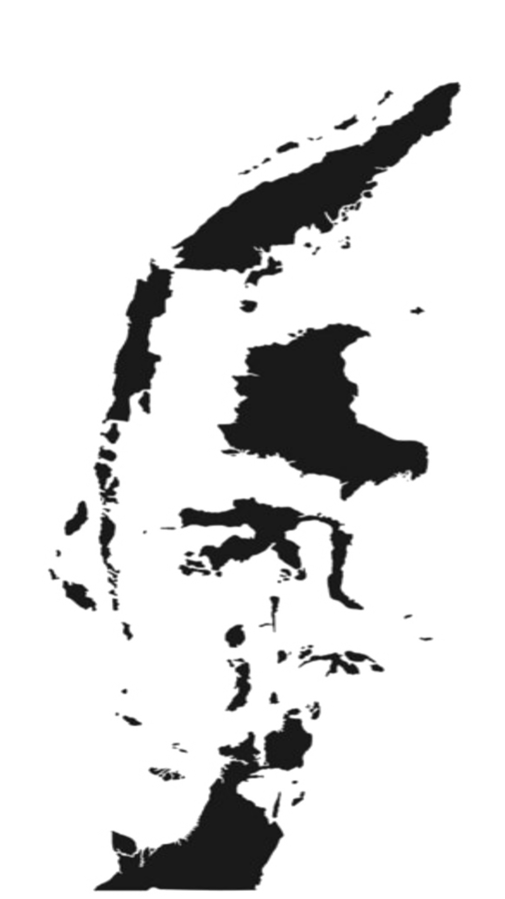
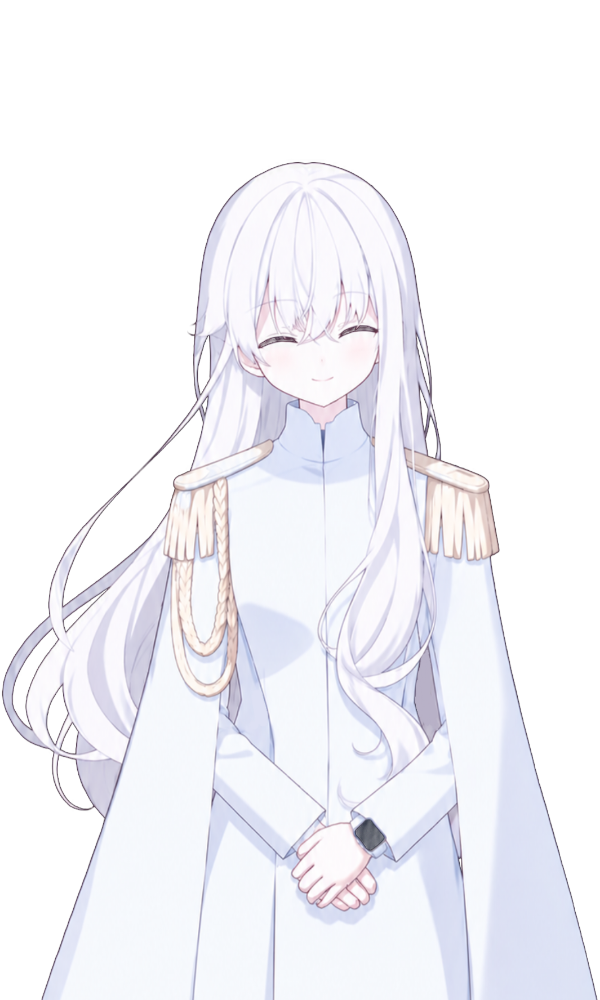

PANCASILA CIVIC EMPOWERMENT
Sila 1:50
Sila 2:50
Sila 3:50
Sila 4:50
Sila 5:50
Kepercayaan:50
Keterlibatan:50
Knowledges:50
Skills:50
Disposition:50

Peta Krisis Nasional
Nama
Ketuk untuk lanjut ▼
Title
Rata-Rata Nilai Pancasila:
Sila 1: Sila 2: Sila 3: Sila 4: Sila 5:
Dimensi Civic Empowerment
Kepercayaan: Keterlibatan: Knowledges: Skills: Disposition:

Siska
Kerja bagus! Anda berhasil mengatasi krisis negara dengan sempurna. Anda telah membimbing bangsa ini dengan benar dan melakukan pemberdayaan warga negara dengan memegang teguh nilai-nilai Pancasila!
Ketuk untuk Selesai ↺